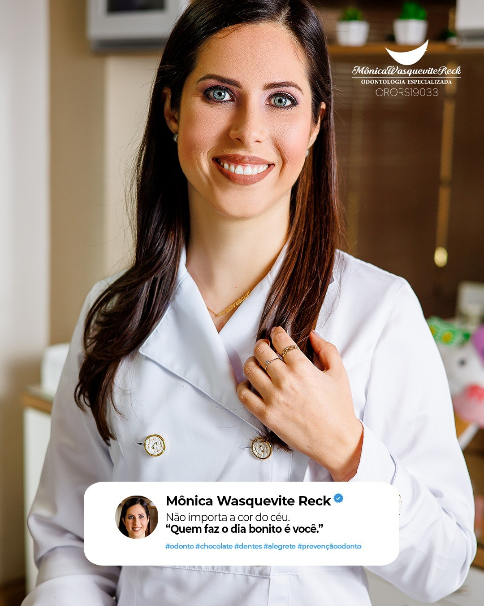

01
Infância
Cuidar cedo é construir saúde para o futuro.
- Prevenção
- Acompanhamento
- Desenvolvimento
- Hábitos
- Orientação
Odontologia completa Alegrete — RS
Prevenção, saúde e estética para cuidar do seu sorriso em todas as etapas da vida.
Há 16 anos, cuido de pessoas e sorrisos com uma visão completa da odontologia, unindo experiência, técnica e atenção aos detalhes.
Prevenção Saúde Estética
16 anos de experiência
Atendimento infantil e adulto
Especialista em Ortodontia
Odontologia completa
Cuidar do sorriso é cuidar da pessoa como um todo.
Da prevenção aos tratamentos mais específicos, cada detalhe do cuidado odontológico importa.

Sobre Mônica
Sou dentista há 16 anos e, ao longo dessa trajetória, construí minha forma de cuidar: olhando o paciente de forma completa.
Atendo crianças e adultos e sou especialista em ortodontia — uma área que amo por transformar sorrisos e autoestima.
Mas também tenho grande paixão pela clínica geral. Da profilaxia ao tratamento de canal, da restauração ao acompanhamento preventivo, tudo faz parte do cuidado com a saúde bucal.
Acredito que a odontologia não é feita apenas de especialidades isoladas. Ter uma visão do todo faz toda a diferença, porque cada detalhe está conectado.
Técnica, conhecimento e um olhar atento para entender o que cada paciente realmente precisa.
Para cada fase da vida
Uma profissional para acompanhar diferentes momentos da sua vida.
Tratamentos
Cuidado preventivo, tratamentos clínicos, ortodontia e estética, sempre com diagnóstico e planejamento individualizados.
Ortodontia convencional e tratamentos voltados ao alinhamento e à função do sorriso.
Alternativa estética para movimentação dentária com discrição e planejamento personalizado.
Cuidados essenciais para manter dentes e gengivas saudáveis.
Recuperação da estrutura dentária unindo função e estética.
Tratamento especializado para preservar o dente e devolver conforto e função.
Procedimentos direcionados à harmonia e estética do sorriso.
Proteção dos dentes durante atividades esportivas.
Dispositivo desenvolvido para auxiliar na proteção dos dentes diante do apertamento e ranger.
Especialidade
É transformar função, estética e confiança através de um planejamento adequado para cada paciente.
Aprendizado clínico consolidado ao longo de 16 anos de prática, com planejamento cuidadoso para cada caso.
Movimentação dentária discreta, com acompanhamento próximo e planejamento individualizado.
Filosofia de cuidado
Proteção
Desenvolvido para ajudar a proteger os dentes contra impactos durante a prática esportiva.
Placas podem auxiliar na proteção dos dentes contra os efeitos do apertamento e ranger, contribuindo para reduzir desgaste e sobrecarga.
A indicação deve ser feita após avaliação profissional.
Método de cuidado
Entender queixas, objetivos e necessidades.
Analisar o paciente de forma completa.
Definir as estratégias mais adequadas.
Executar o tratamento com precisão e cuidado.
Manter o cuidado ao longo do tempo.
A clínica
Estamos localizados na esquina da Praça Getúlio Vargas, em um espaço moderno e acolhedor, preparado para oferecer uma experiência odontológica completa.
Rua Barão do Amazonas, 20 – 2º andar Alegrete — RS Ver localizaçãoDúvidas frequentes
Se a sua dúvida não estiver aqui, é só chamar no WhatsApp.
Sim. O atendimento infantil faz parte da rotina da clínica, com foco em prevenção, acompanhamento do desenvolvimento e orientação de hábitos.
Sim. Atendemos pacientes adultos em todas as fases da vida, com planejamento individualizado para cada necessidade.
Na avaliação, são analisadas a saúde bucal, a função e o alinhamento dos dentes. A partir disso, são definidas as estratégias mais adequadas para cada paciente.
Sim. Os alinhadores invisíveis são uma alternativa estética para movimentação dentária, sempre com planejamento personalizado.
Claro. A avaliação serve justamente para isso: entender o seu caso e definir, junto com você, o melhor caminho.
A prevenção é recomendada de forma regular, independentemente de sintomas. O ideal é manter acompanhamento periódico para evitar problemas maiores.
Sim. O tratamento de canal é realizado na clínica, com o objetivo de preservar o dente e devolver conforto e função.
É um dispositivo desenvolvido para ajudar a proteger os dentes contra impactos durante a prática esportiva, indicado após avaliação profissional.
Pode ser indicada para pessoas que apertam ou rangem os dentes, auxiliando na proteção contra desgaste e sobrecarga. A indicação é feita após avaliação.
Rua Barão do Amazonas, 20 – 2º andar – Alegrete — RS, na esquina da Praça Getúlio Vargas.
Pelo WhatsApp (55) 99127-1925. É só enviar uma mensagem e retornaremos para confirmar o melhor horário.
Agendamento
Uma odontologia completa, com experiência, atenção aos detalhes e foco em saúde, função e estética.
Agendar minha avaliaçãoAlegrete — RS